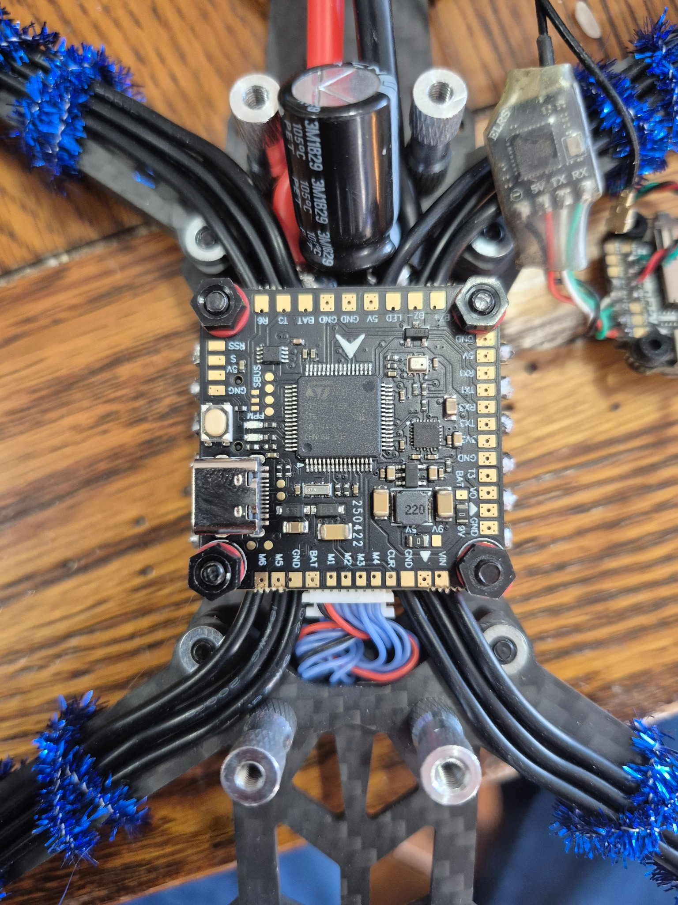

AIRCRAFT / FLIGHT TESTING
Foam Aircraft Build & Flight Testing
Constructed an aircraft from an existing foamboard template, modified components, and investigated balance and handling through flight testing.
VIEW COMPLETED CASE STUDY →ENGINEERING WORK
Hands-on engineering, aircraft experimentation, electronics, and software. Completed work is separated from projects still in development.

ELECTRONICS / RC SYSTEMS
Hands-on work with FPV drone hardware and electronics integration.
IN PROGRESSSOFTWARE / AI
Developing a modular, local-first personal AI assistant using Python, FastAPI, and local language models.
IN DEVELOPMENT